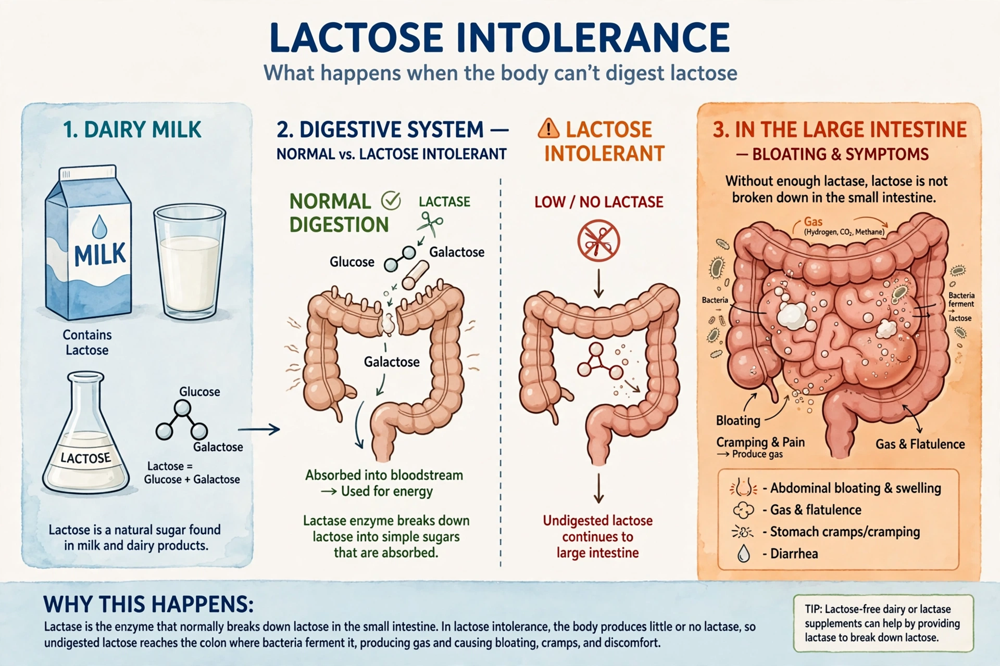

Lactose intolerance is a common condition caused by a decreased ability to digest lactose, a sugar found in milk products, due to low levels of the enzyme lactase. It causes abdominal pain, bloating, flatulence, diarrhoea and nausea after consuming lactose.

Lactose intolerancePrimary lactase deficiency is genetic and normal in most of the world's adults; lactase persistence into adulthood is common in populations with a history of dairy farming. Secondary deficiency follows damage to the small intestine, and congenital deficiency is a rare genetic disorder.
Diagnosis may use a hydrogen breath test, lactose tolerance test or genetic testing. Management involves reducing lactose intake, using lactase supplements or lactose-free products, and ensuring adequate calcium and vitamin D. It differs from milk allergy, which involves the immune system. See also Malabsorption and Fructose malabsorption.